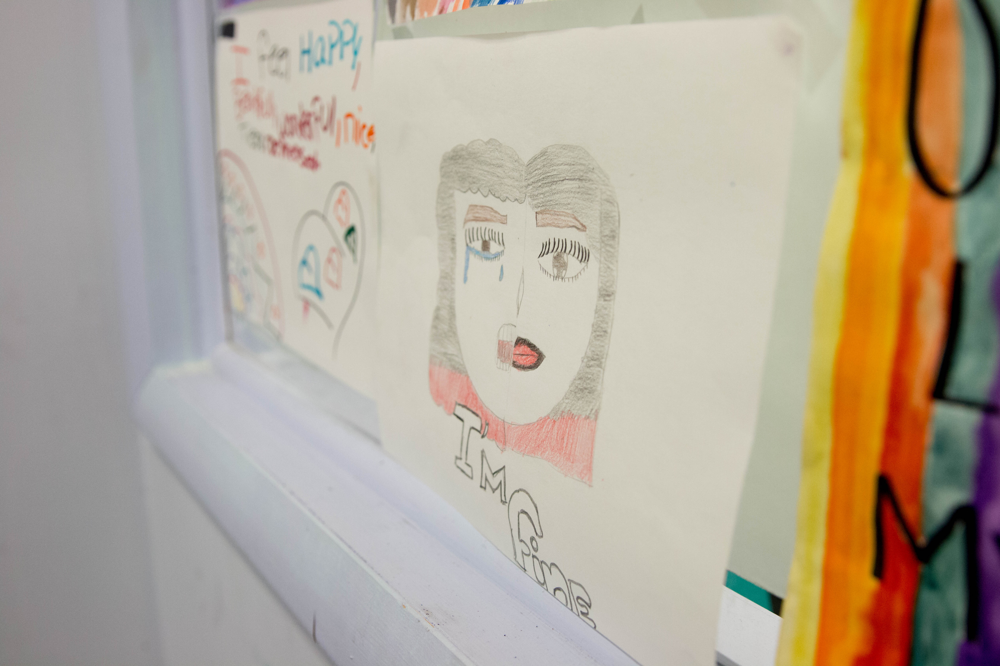
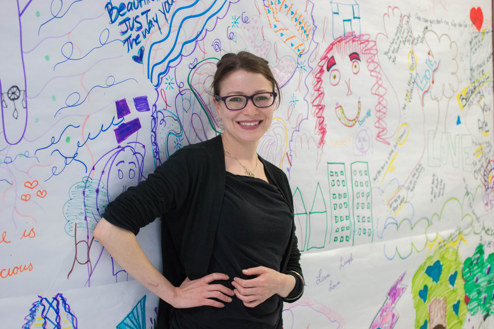

Para leer esta historia en inglés, haz clic aquí.
La tasa de adolescentes latinas que han intentado suicidarse en la Ciudad de Nueva York ha sido la más alta por los últimos 20 años, a comparación de adolescentes de otras razas. Los números han permanecido persistentes, causando un grave problema en la comunidad latina que no parece terminar. Pero este año podría haber un cambio, gracias a tres nuevos proyectos de ley que buscan finalmente frenar esta tendencia.
Según la encuesta Youth Risk Behavior Survey hecha por los Centros para el Control y la Prevención de Enfermedades (CDC, por sus siglas en inglés), en el 2015, 13.2% de jovenes latinas en la ciudad intentaron quitarse la vida a comparación con 9.9% de afroamericanos, 7.8% de blancas y 5.3% de asiaticas.
Porcentajes de intentos de suicidio por raza en NYC
Fuente: Centros para el Control y la Prevención de Enfermedades CDC
La dominicana-americana Carmen De La Rosa, quien es la asambleísta estatal por el distrito 72 del Alto Manhattan, patrocina los tres proyectos de ley que buscan hacer los servicios de salud mental más accesibles para jóvenes latinas.
Como alguien que creció entre dos culturas, De La Rosa sabe que muchas niñas latinas pasan por situaciones difíciles que muchas veces, entre otros factores, llevan a estas jóvenes a sufrir de depresión, ansiedad y otros problemas de salud mental. No tienen acceso a la ayuda que necesitan y en muchos casos, ven al suicidio como la única salida.
“Sabemos que una vida es mucho para perder,” dijo De La Rosa. “Cuando un joven se suicida, no solamente afecta a ese joven, afecta a la familia, afecta a la escuela, afecta a la comunidad...tenemos que salir adelante de una epidemia para que nuestra comunidad no vea esta pérdida que, yo creo, es completamente evitable.“
Junto al presidente del Puerto Rican/Hispanic Task Force el asambleísta Marcos A. Crespo, el 12 de abril de 2017, De La Rosa presentó una enmienda a la ley de higiene mental para establecer un consejo asesor de prevención de suicidio para adolescentes latinas. Si el proyecto es aprobado, el consejo de 17 miembros se encargará de facilitar la coordinación de servicios y recursos; monitorear la implementación de los planes de acción; y entregar un informe anual al gobernador y a la legislatura con recomendaciones de políticas, legislación y financiamiento para implementar los planes de acción.
El mismo día, De La Rosa también presentó una enmienda a las leyes de educación y de salud pública del estado de Nueva York que requiere la formación de competencia y conciencia cultural de todos los profesionales médicos como parte de los requisitos de licencia. Esto es para asegurarse que los médicos estén conscientes de los factores lingüísticos y culturales que pueden afectar a un cliente a la hora de ofrecer los servicios a minorías. En el caso de un paciente latino, esto significa que los médicos tendrían que entender las diferentes particularidades en el habla dependiendo del país de origen.
El suicidio se ha convertido en la segunda causa de muerte en adolescentes latinas en el estado de Nueva York, después de heridas involuntarias.
- NYS Office of Mental Health
De La Rosa también es co-patrocinadora del proyecto de ley que se llama el “Minority Mental Health Act,” otra enmienda a la ley de higiene mental que crearía una División de Salud Mental de Minorías dentro de la Oficina de Salud Mental estatal para “satisfacer las necesidades de las minorías raciales y étnicas.” El proyecto fue presentado por el senador estatal Kevin S. Parker el 20 de enero del 2017.
Los factores
El suicidio se ha convertido en la segunda causa de muerte en adolescentes latinas en el estado de Nueva York, después de heridas involuntarias. Aunque los factores detrás de los intentos de suicidio son muchos y cada caso es diferente, existen factores comunes que recurren en los casos de latinas adolescentes. Estos factores varían entre la pobreza, choque cultural, falta de acceso a salud mental y el estigma sobre la salud mental de la cultura latina.
“Los CDC define Intento de suicidio como comportamientos autodirigidos con la intención de morir,” explica Jennifer Humensky, profesora asistente de la clínica de política pública y administración de salud de Columbia University.
En las culturas latinas, según Humensky, hay un gran enfoque en la familia, la importancia de la autoridad y los roles tradicionales de género. “Los conflictos se presentan cuando las jóvenes están expuestas a la cultura estadounidense en la escuela. Esto crea una presión de balancear ambas culturas,” explicó.
Humensky y su equipo de investigación han descubierto que la inestabilidad familiar y la salud mental de los padres también pueden contribuir a los factores de riesgo. Pero ahora, con la nueva administración del presidente Donald Trump, se ha visto un factor nuevo y más frecuente.
Dra. Rosa Gil, la fundadora y presidenta de La Vida es Preciosa, la única organización en la ciudad de Nueva York que ayuda específicamente a adolescentes latinas que han intentado suicidarse o se han lastimado, dijo que ve claramente los efectos de la campaña anti-inmigrante de Trump en las niñas que participan en su programa.
“Este problema no se va ir [y] va a empeorar,” explicó Gil durante una entrevista por teléfono. “La administración de Trump está amenazando a muchos en nuestra comunidad en deportarlos. Tenemos niñas que vienen a nuestro centro llorando porque piensan que cuando lleguen a casa no van a encontrar a su padre o madre porque los han deportado.”
Michelle Bialeck, la directora del centro de La Vida es Preciosa en el Bronx, también ha visto un miedo entre las participantes de su centro.
“Todas nuestras niñas tienen familias inmigrantes y muchas tienen familias indocumentadas,” explicó Bialeck. “Ser de una familia indocumentada causa mucha ansiedad y estrés en las niñas y las hace sentir que una gran parte del país no las quiere aquí.”
La Vida es Preciosa
Es un jueves por la tarde en un vecindario transitado en el sur del Bronx. La lluvia ha terminado y los jóvenes comienzan a llenar las calles, ya que es la hora de salida de las escuelas. Un grupo de 30 adolescentes latinas, entre 12 y 17 años de edad, ya tienen su rutina diaria. En vez de irse a casa, salen del colegio y se van a un mismo lugar: La Vida es Preciosa.
Juliana, 16, es una de las participantes del programa. Sentada a lado de la ventana en la sala de música, tratando de cerrarla con frustración, cuenta que ella odia la Ciudad de Nueva York. Le sofoca el ajetreo urbano y la gran cantidad de gente.
Se cambió el nombre de Juliana y las otras participantes a petición de Bialeck y por ser menores de edad.
Juliana nació en California de padres vietnamitas, pero cuando tenía cuatro años de edad, su madre biológica ya no la podía cuidar. Con pocos detalles sobre su infancia, la joven contó que fue adoptada por padres puertorriqueños en el Bronx. Se considera latina, algo que se nota de inmediato al hablar con ella, por su espanol con acento puertorriqueño.
Se lleva bien con su padre adoptivo, pero la relación con su madre no es la mejor. Dice que su madre la tiene restringida y no “la deja salir de la casa.” Los problemas familiares, la situación económica, y las dificultades típicas de una adolescente la llevaron a lastimarse. Debido a la ley de privacidad de HIPAA, Bialeck no pudo revelar exactamente cómo se lastimó y Juliana tampoco se sintió cómoda hablando del tema.
Juliana y sus compañeras del Bronx tienen la suerte que existe un espacio seguro como LIP en su condado. Allí, tienen acceso a programas de terapia mediante el arte, fotografía, música y cocina. Dentro de salones coloridos tienen tutores para ayudarlas con sus tareas y aplicaciones universitarias. Aparte de esto, las jóvenes tienen sesiones de terapia psicológica como requisito para ser parte de LIP.
“Me siento libre,” dijo Elena,14, otra participante de raíces puertorriqueñas al preguntarle qué es lo que más le gusta de LIP. “Me enseña cómo cooperar con los demás.”
LIP fue fundado en el 2008 en el Bronx y su efectividad se ve en los números. Hasta ahora LIP ha logrado que de las más de 270 latinas que han participado en el programa, ninguna haya terminado quitándose la vida, según el New York State Psychiatric Institute/Columbia University.
Pero por el momento, la organización solo tiene centros en el Bronx, Brooklyn y Queens. Gil ha tenido en mente expandir el programa al condado de Manhattan.
“Lo que sí sabemos es que hay menos latinos viviendo en el Sur y partes medias de Manhattan en comparación con el Alto Manhattan, así que estamos deduciendo que el lugar que necesita la ayuda es el Alto Manhattan,” ella dijo.
Gil dijo que le pidieron fondos al concejo municipal en el 2016, pero no se los dieron. Un nuevo centro costaría $300,000. Sin embargo, la Senadora Marisol Alcántara está interesada y dispuesta a ayudarlos, según Gil. Alcántara no contestó varias solicitudes para una entrevista sobre el tema.
Otras Iniciativas
En Washington Heights, el Northern Manhattan Improvement Corporation (NMIC) ayuda a personas que sufren de depresión y ansiedad en el Alto Manhattan. Muchos latinos recurren a estos servicios. Sin embargo, los servicios que esta organización ofrece no están diseñados para tratar específicamente a adolescentes latinas que han intentado suicidarse.
Morgan Siegel, quien coordina todos los servicios de salud mental en la organización, dijo que para ella es preocupante que no hayan centros específicos que ayuden a estas adolescentes latinas que han intentado quitarse la vida ya que “teniendo más recursos para esta población es la mejor manera de lidiar con este problema.”
El Teachers College de la Universidad de Columbia está tratando de cerrar la brecha de comunicación que existe entre los profesionales de la salud mental y los latinos que buscan ayuda. En el 2014, el departamento de psicología clínica y consejería empezó a ofrecer a sus estudiantes la concentración bilingüe de la salud mental para latinos/as. Según su sitio web, es el único programa en el área tri-estatal que “ofrece la formación culturalmente adecuada en la prestación de servicios de salud mental en español para las Latinas/os.”
Los estudiantes hacen sus prácticas en varias comunidades latinas en la ciudad de Nueva York. Algunos de ellos se quedan en el Alto Manhattan para trabajar con NMIC.
“Es importante entender la cultura y los valores culturales porque necesitamos incorporar eso en las metas de tratamientos y las intervenciones que usamos para latinos,” dijo Dra. Elizabeth Fraga, la directora de la concentración bilingüe. “Hay estudios que muestran que el 50 por ciento de minorías étnicas tienden a abandonar la terapia después de la primera sesión y la mayoría de las veces es porque no estamos dando tratamientos culturalmente adecuados.”
Fraga dijo que fundar esta concentración era su sueño. Cuando ella estudiaba para ser psicóloga, aprendió todo en inglés y después tuvo que aprender como dar tratamiento adecuado a sus clientes latinos.
“Hay tantos países latinos que no basta con decir: ‘Oh hablas español, puedes tratar a cualquier persona," porque los dichos son muy diferentes, las palabras son muy diferentes, el clima sociopolítico de cada país es diferente,” Fraga dijo. “Yo realmente quería que los estudiantes tengan toda esta información antes de ver a los clientes.”
***
Ahora en LIP, Juliana tiene compañeras con quienes puede compartir su experiencia y recibe terapia para hablar sobre cómo manejar su ira. Le encanta estar en un lugar donde todas hablan, o por lo menos entienden, español. Bialeck y los demás miembros del centro la motivan para estudiar ciencia forense y justicia criminal. A sus 16 años, Juliana ya sabe que al graduarse del colegio, quiere mudarse al sur del país y escaparse de Nueva York.
En algún punto su mamá quiso que se inscribiera en el ejército para que ellos pagaran su matrícula de la universidad, pero Juliana le dijo que no.
“Prefiero el sur, como Virginia, Carolina del Norte, Carolina del Sur, Georgia, Texas,” ella dijo. “Creo que la vida sería un poco mejor alli. Quizás no durante la niñez pero después de graduarse del colegio o la universidad, porque no hay tanto [ajetreo] alli como aqui.”
Mientras tanto, De La Rosa seguirá luchando para que los proyectos de ley pasen y para que otras niñas como Juliana reciban la ayuda que necesitan.
“Una de las metas más grandes de esta iniciativa es educar a nuestra comunidad de hablar del problema de suicidio que no es un tabú, hablar de la salud mental, y hay ayuda,” dijo De La Rosa. “Mi meta es educar y proveer la ayuda necesaria para que nuestros jóvenes puedan vivir una vida más llena, más alegre. La juventud debe ser un momento alegre para los jóvenes y deben de tener las herramientas para poder sentirse que si tienen un problema, tienen vínculos que los escuchen.”